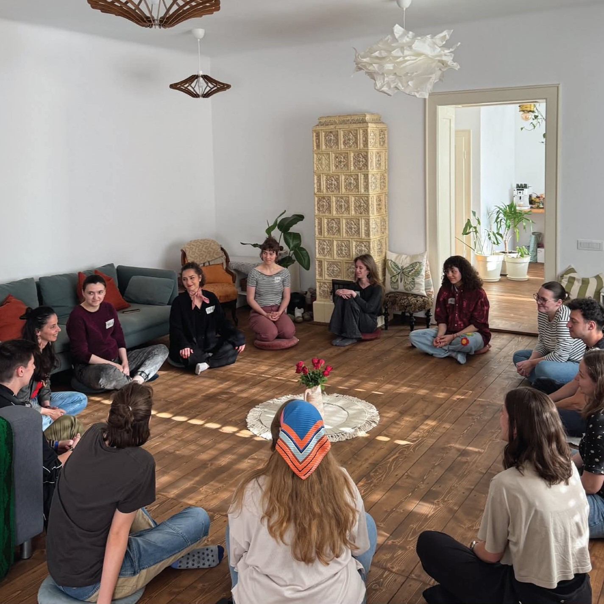

No items found.

Conexiuni prin Diversitate
„Conexiuni prin Diversitate” este un proiect inițiat de Asociația Youth DiVision Sibiu, cu sprijinul
programului Corpul European de Solidaritate. Proiectul a avut ca scop promovarea incluziunii sociale prin
crearea unui spațiu autentic de învățare, dialog și exprimare liberă pentru tinerii din Sibiu.
Prima activitate din cadrul proiectului a fost evenimentul de deschidere dedicat tinerilor (februarie 2025)
unde le-am prezentat conceptul, obiectivele și tipurile de activități propuse. A fost un moment de
întâlnire, curiozitate și entuziasm, în care am dat startul înscrierilor și am pus primele baze ale
comunității care urma să se formeze.
Grupul de participanți selectat ulterior a rămas constant pe toată durata desfășurării, pentru a le oferi o
experiență de învățare coerentă, profundă și autentică
Astfel, grupul selectat a parcurs trei etape esențiale:

- Etapa teoretică, axată pe conștientizare și educație prin workshopuri interactive (martie-aprilie 2025);
- Etapa practică, unde tinerii au transformat emoțiile și învățăturile în creații artistice, prin desen și fotografie (mai 2025);
- Expoziția finală, care a adus la un loc lucrările realizate de tineri la cele două ateliere, evidențiind parcursul lor din cadrul proiectului (iunie 2025).
- Discriminare și prejudecăți – înțelegerea mecanismelor și a modului în care putem combate stereotipurile;
- Încredere și compasiune de sine – explorarea relației cu propria persoană și importanța blândeții față de sine;
- Comunicare și rezolvarea conflictelor – dezvoltarea abilităților de exprimare și ascultare activă;
- Drepturi egale și incluziune socială – discuții despre rolul fiecăruia într-o comunitate echitabilă.
- înțelegerea mecanismelor relaționale, prin explorarea triunghiului dramatic și a triunghiului empatic;
- conectarea cu propriile emoții, cultivarea compasiunii față de sine și recunoașterea importanței blândeții în procesul de dezvoltare personală;
- înțelegerea celor trei „i” – Impulsiv, Inhibat și Înțelept – care ne influențează comportamentele în interacțiuni;
- cât de important este să ne oferim libertatea de a fi autentici, de a simți și de a acționa conform propriei identități.
- uneori comunicarea poate fi mai expresivă prin activități practice decât prin cuvinte;
- ieșirea din zona de confort asigură explorarea sinelui și descoperirea creativității.